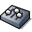

Suomi
Suomi Français
Français Deutsch
Deutsch Italiano
Italiano Русский
Русский Español
Español Svenska
Svenska 日本語
日本語 Українська
Українська 中文 ［中文］
中文 ［中文］ Português
Português Slovenčina
Slovenčina English
EnglishThe translation of this page isn't yet complete. Until it is, unfinished parts use the English original.
Media
| Työpöytäpalkki | ||
| Sijainti | /boot/system/preferences/Media | |
| Asetukset | ~/config/settings/Media/* ~/config/settings/System Audio Mixer ~/config/settings/MediaPrefs Settings - Stores the panel's window position. |
Documentation is still missing. If you want to work on it, please announce it on the Documentation mailing list to avoid duplication.